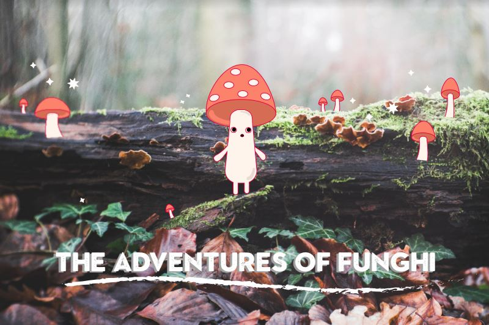

Home |
Raster |
Vector |
Time Based Media |
About |
Contact

I learned the basics of creating vector files using Adobe Illustrator!
During this unit, I used my existing knowledge of Illustrator combined with some really helpful, new skills from class to create a fictional creature, from scratch! Using strokes, fills, anchors, and vector shapes, I created a whimsical character named Funghi. Fhungi likes very erratic strolls across the forest floor in the broad direction of adventure and fhun.